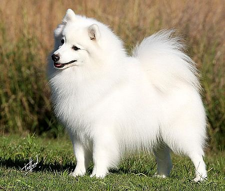
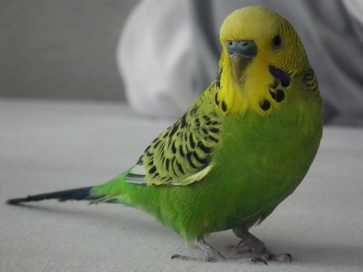
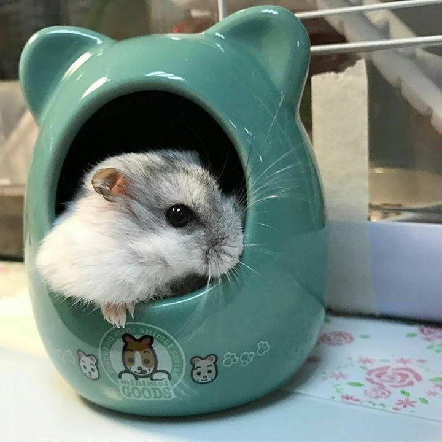

Pets Monique has owned:
- Budgie
- Cockatiel
- Cat
- Hedgehog
- Fish
- Hamster
Cats!
Monique loves animals! If she had the time and finances for it she would basically own a zoo. She has 1 cat named Kirby (yes, after the video game character, but unfortunately not as round). He looks like the cat pictured above and is 1 year old. Monique had a cat before him,but she unfortunately passed away and Monique still misses her very much, but Kirby is a good boy. Monique has also had many other pets but currently Kirby is her only one.
Dogs!
Monique has always wanted a dog, but it just never worked out. Hopefully one day it will but until then she shall just dream. If she could she would like a Japanese Spitz, as she has heard they are very well tempered, playful and very soft, of course she would probably love any dog she got, but that would be her top choice.
Bird
In the past, Monique has had birds, her first set was a pair named Max & Ruby, they were good birds and Monique was very sad when they flew away because her dad left the back door open. She then got her bird Emily, but Emily was kind of mean and only liked Monique's father, it was only at the end of her life that Emily began to tolerate and get comfortable with Monique. So comfortable that she died :( while Monique was holding her (a truly traumatizing experience). Briefly while Emily was still alive, Monique's mom went to Jamaica and Monique and her dad decided it would bbe a good idea to get another bird. Monique's mother was not pleased and they had to give the bird away soon after she got back.
Hamster
At the age of 13 Monique developed a strange fixation with dwarf hamster's and desperately wanted one as a pet, she eventually saved up enough money and got one, naming her Pepper (she looked similar to the picture above). Sadly hamsters do not live very long but Monique made some great memories with Pepper and highly recommends hamster's as beginner pets. Monique is also acquainted with other small animals, having owned a hedgehog for a week (her name was Potato). Monique would love to own more pets.